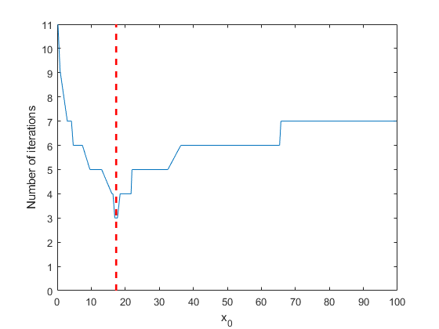

Метод Герона
Contents
Описание метода Герона
Пусть задано вещественное число , и необходимо найти его квадратный корень, то есть такое число  , что .
, что .
Для этого, зададим начальное приближение , и будем итерационно считать
Постановка задачи
Для заданного вещественного числа провести анализ:
- последовательности в зависимости от для различных начальных условий ;
- зависимости количества итераций метода Герона от начального условия .
Реализация метода Герона
function [a_root, iter, x] = heron_method(a, x_0) % Функция двух аргументов: % a: число, из которого будет считаться квадратный корень % x_0: начальное приближение % % Возвращаемые значения: % a_root: квадратный корень из числа a % iter: количество итераций, которое потребовалось алгоритму % x: последовательнось x_n iter_max = 30; % Максимльное количество итераций алгоритма eps = 10^-6; % Точность вычислений x = NaN(iter_max + 1, 1); % Вектор для последовательности x_0 x(1) = x_0; x(2) = 1/2 * (x(1) + a/x(1)); iter = 1; while abs(x(iter + 1) - x(iter)) > eps iter = iter + 1; if iter > iter_max error('Method did not converge.'); end x(iter + 1) = 1/2 * (x(iter) + a/x(iter)); end x = x(~isnan(x)); % Удаляем пустые элементы в векторе x a_root = x(end); % Корень из числа a есть последнее значение в векторе x end
Посчитаем квадратный корень из методом Герона:
a = 300; x = heron_method(a, 10)
Разница между посчитанным числом x и точным значением sqrt(a) есть
abs(x - sqrt(a))
x = 17.3205 ans = 3.5527e-15
Случайные начальные условия
Зададим количество nsim начальных условий, для каждого из которых запустим метод Герона heron_method().
nsim = 100;
Также, зададим верхнюю границу x_upper, выше которой начальные условия браться не будут:
x_upper = a/3;
Вообще, можно было бы разбить полуинтервал равномерно. Например, следующим образом
x_0 = linspace(1e-4, x_upper, nsim);
но в этот раз мы разберем генерацию случайных чисел в MATLAB®.
Зададим "seed" для генерации псевдослучайных величин, чтобы при повторном запуске кода генерировались одни и те же "случайные" величины.
rng(54);
Теперь создадим nsim равномерно распределенных случайных величин на интервале , см. unifrnd, и отсортируем их. Это и будут наши начальные приближения для метода Герона.
x_0 = unifrnd(0, x_upper, nsim, 1); x_0 = sort(x_0);
Также зададим количество последовательностей , которое мы будем рисовать для задачи (1)
nplot = 8;
и выберем nplot случайных индексов от 1 до nsim, см. справку randperm.
ind_draw = randperm(nsim, nplot)
ind_draw =
55 95 50 9 64 48 32 58
Траектории некоторых последовательностей
Создадим вектор-столбец iter_num размера nsim, в который будем записывать количество итераций метода Герона в зависимости от различных начальных условий.
iter_num = zeros(nsim, 1);
Для каждого начального условия из вектора x_0 запустим heron_method.
figure(2); for k = 1 : nsim [~, iter_num(k), x_path] = heron_method(a, x_0(k)); % Если индекс k принадлежит множеству индексов ind_draw, то рисуем данную траекторию if ismember(k, ind_draw) plot(0:iter_num(k), x_path, '-s'); hold on; end end hold off; xlabel('No. of interation'); ylabel('x_0');
Нарисуем горизонтальную пунктирную линию красным цветов, толщиной 2 (по умолчанию все линии рисуются с толщиной 1, см. справку line), которая отобразит точное значение корня .
line([0, max(iter_num(ind_draw))], [sqrt(a), sqrt(a)],... 'color', 'red', 'LineWidth', 2, 'LineStyle', '--');
Количество итераций алгоритма в зависимости от начального приближения
Здесь, как и ранее, красная пунктирная линия отмечает точное значение величины . Обратим внимание на то, что если начальное приближение выбрано уже достаточно близко к точному, то требутся всего несколько итерация алгортма чтобы он сошелся. Чем дальше (или "хуже") мы подобрали начальное приближение, тем дольше работает метод.
figure(3); plot(x_0, iter_num, '-') xlim([0, x_upper]); % Пределы оси Ox: от 0 до верхней границы x_upper ylim([0, max(iter_num)]); % Пределы оси Oy: от 0 до максимльного числа итераций xlabel('x_0'); ylabel('Number of iterations'); line([sqrt(a), sqrt(a)], [0 max(iter_num)],... 'Color', 'red', 'LineWidth', 2, 'LineStyle', '--');